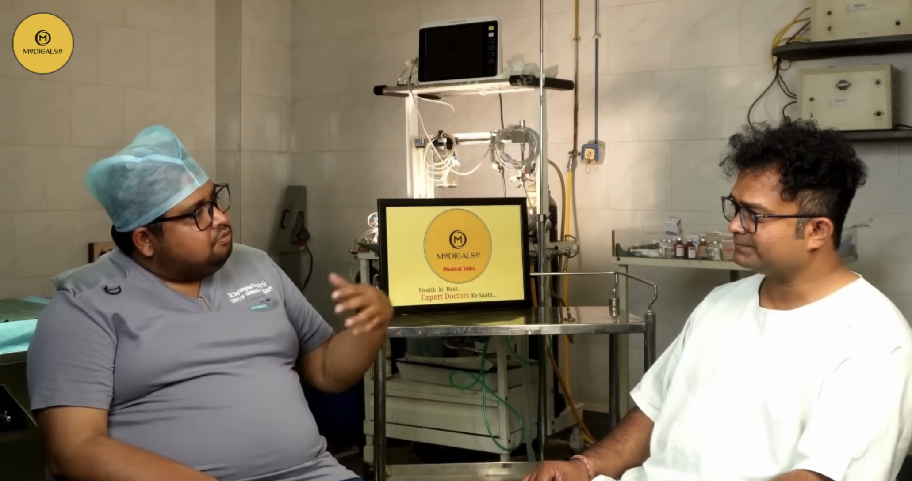

One unified healthcare ecosystem.
A place where professionals can learn, grow, connect, recruit, and access trusted healthcare resources through a single integrated network.
The ApronHanger story
ApronHanger is a healthcare-focused digital ecosystem founded with a simple vision: to connect, empower, and support every stakeholder in the healthcare community.
Founded by Dr. Abhijeet Barua, a physician and healthcare entrepreneur, ApronHanger was created to bridge the gaps between healthcare professionals, organizations, students, job seekers, and medical suppliers.
What began as a healthcare networking initiative has evolved into a comprehensive ecosystem serving multiple needs of the healthcare industry through specialized platforms.


A place where professionals can learn, grow, connect, recruit, and access trusted healthcare resources through a single integrated network.
Four platforms. One purpose.
A professional networking and community platform designed exclusively for healthcare professionals, enabling collaboration, knowledge sharing, and professional growth.
A dedicated marketplace for professionals, students, institutions, and medical organizations to access medical books, educational resources, and healthcare equipment.
A healthcare-focused job portal connecting talented candidates with opportunities across hospitals, clinics, startups, diagnostic centers, pharmaceutical companies, and allied organizations.
A recruitment and workforce management platform for hospitals, institutions, and recruiters to discover, evaluate, and hire qualified healthcare talent efficiently.
Built around healthcare
Every solution we build is designed specifically for the healthcare industry.
A growing network of doctors, nurses, allied professionals, recruiters, students, and healthcare leaders.
From students entering the profession to experienced leaders, we support development at every stage.
Helping organizations find the right talent while candidates discover meaningful opportunities.
Access to educational content, professional insights, medical books, and healthcare equipment.
Our Founder
Dr. Abhijeet Barua is a medical professional and entrepreneur dedicated to strengthening healthcare through technology, collaboration, and innovation.
Recognizing the challenges faced by healthcare professionals, institutions, and aspiring candidates, he envisioned ApronHanger as a platform that brings together networking, recruitment, education, and healthcare commerce under one trusted brand.
His mission is to build a healthcare ecosystem that empowers professionals, supports organizations, and ultimately contributes to better healthcare delivery.
Dr. Barua’s founder message.
Our shared future
At ApronHanger, we believe healthcare is stronger when professionals are connected, opportunities are accessible, knowledge is shared, and organizations are empowered with the right talent and resources.
One Ecosystem. One Community. Endless Possibilities.